Q1. Vous êtes :
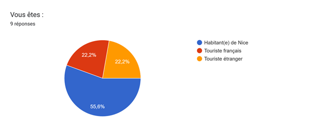
Q2. Êtes-vous globalement satisfait(e) des transports à Nice ?
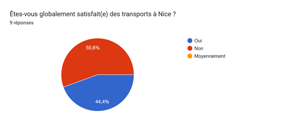
Q3. Vous utilisez principalement :
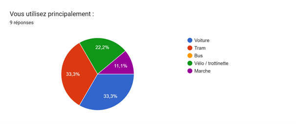
Q4. Votre priorité dans un transport est :
Q5. Utilisez-vous au moins un mode de transport non polluant (marche, vélo, tram, bus électrique) chaque semaine ?
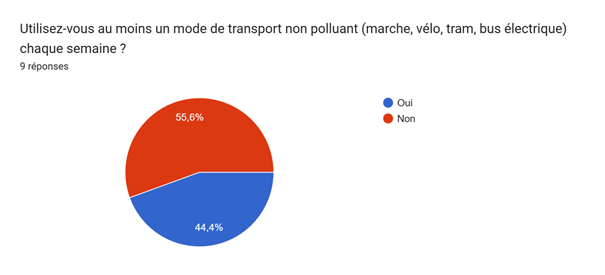
Q6. Si non, votre principal frein est : (Répondez seulement si vous avez répondu “Non” à la question Q5.)
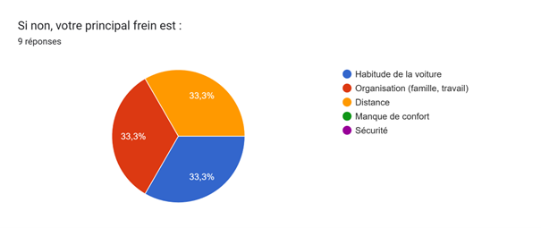
Q7. À votre avis, les pistes cyclables sont :
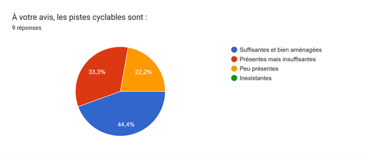
Q8. Seriez-vous prêt(e) à utiliser un vélo électrique pour certains trajets ?
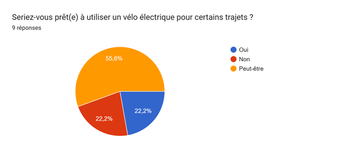
Q9. La sécurité des piétons et cyclistes à Nice vous semble :
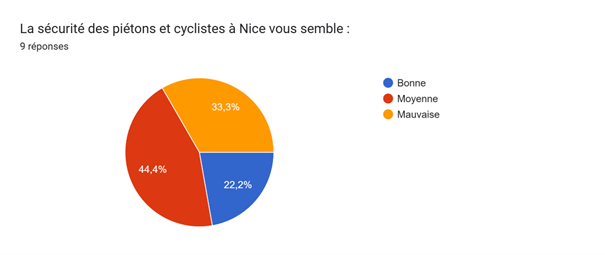
Q10. Pensez-vous que le tramway est un bon outil pour réduire la pollution à Nice ?
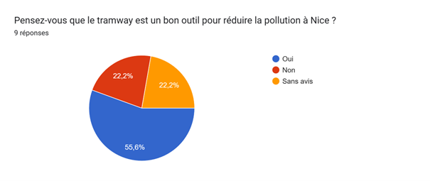
Q11. Souhaiteriez-vous plus de bus électriques (moins bruyants, moins polluants) ?
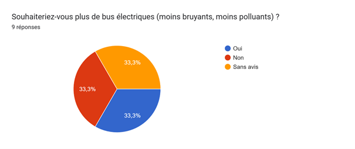
Q12. Pour réduire la circulation automobile, seriez-vous favorable à :
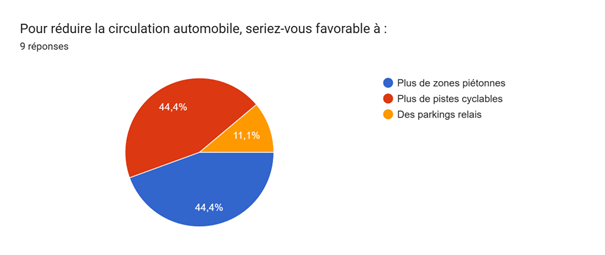
Q13. Seriez-vous prêt(e) à limiter l’usage de votre voiture si les transports non polluants étaient plus attractifs ?
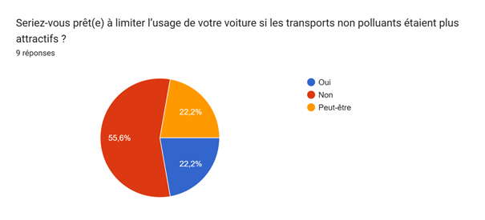
Q14. L’investissement prioritaire selon vous devrait être :
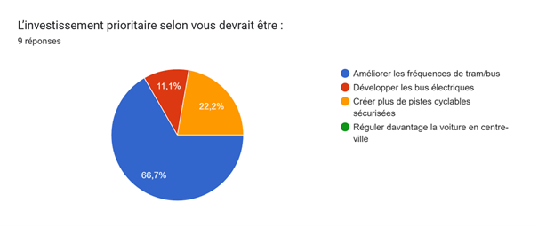
Q15. Trouvez-vous que Nice communique suffisamment sur les transports non polluants ?
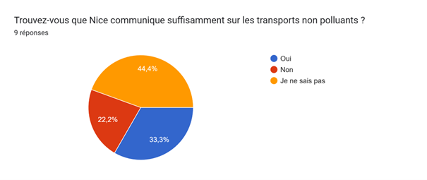
Q16. Recommanderiez-vous les transports de Nice à un ami qui souhaite se déplacer de façon écologique ?
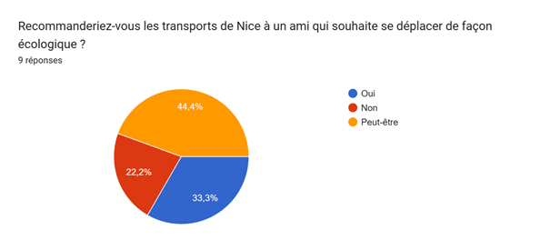